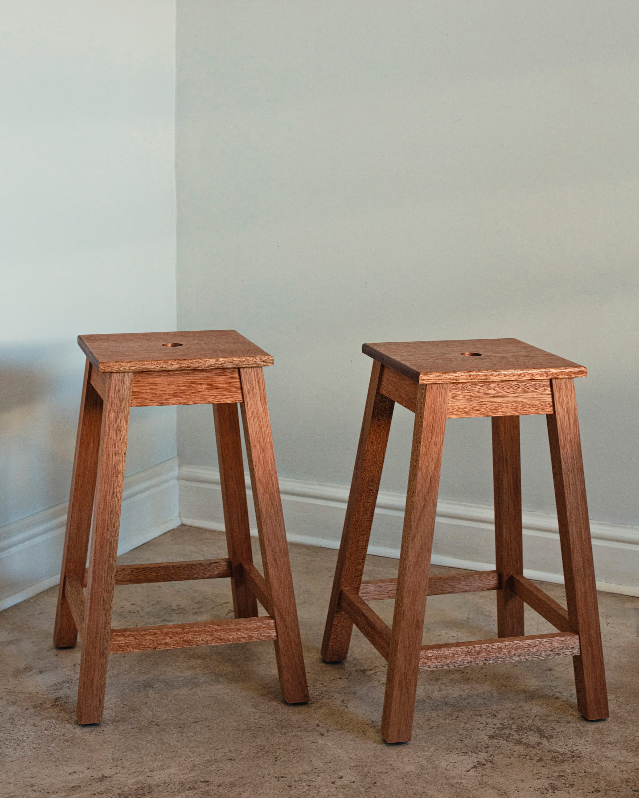

Everyday furniture
Kitchen Stool
A simple stool in Red Meranti, with clean lines and a small opening in the seat that makes it easy to carry.

Interested in this piece or a related commission?
Enquire about the Kitchen Stool
Interested in this piece or a related commission?
Enquire about the Kitchen Stool